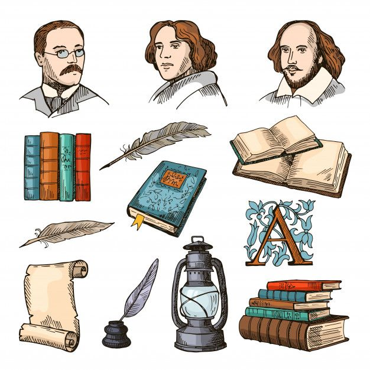

Voices of England: Feed of English writers

Have you ever wondered what Shakespeare's Instagram profile would look like? What photos would Charles Dickens upload to his stories, or who would Virginia Woolf give a like?
Welcome to "The English writers Feed." In this project, we're going to travel back in time to the English literature, an era of unprecedented creative explosion, but not to memorize boring dates and names. You're going to become the community managers of the greatest poets and artists in English history.
You will create a profile in Canva as if you were a writer from an English period and share this profile with your classmates through a fun oral presentation where you will put yourself in the author's shoes.
Ready? Let's begin! ⬇️
Our roadmap through literature
Watch out! Read these recommendations before you begin
In this project, you'll simulate a writer's profile on a social network, but you'll need to use your corporate account and log in to tools like Canva. Here are some tips to ensure your literary journey goes smoothly digitally. 💪🏻